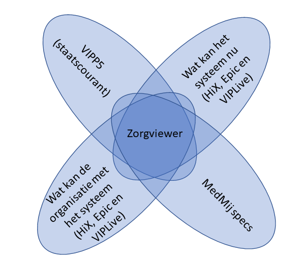

RIVO-Noord Zorgviewer Implementation Guide
1.2.0 - CI build

RIVO-Noord Zorgviewer Implementation Guide
1.2.0 - CI build

RIVO-Noord Zorgviewer Implementation Guide - Local Development build (v1.2.0) built by the FHIR (HL7® FHIR® Standard) Build Tools. See the Directory of published versions
Deze pagina beschrijft de content van de datasets. N.B. Datasets zijn relevante selectie van data elementen met eventueel filters voor een bepaald zorgpad.
Aka “Gegevenssets” virtueel bouwblok.
Vanuit verschillende projecten en programma’s wordt er gewerkt aan de de Basisgegevensset Zorg (BgZ) bestaande uit 28 zorginformatiebouwstenen (zibs). Vanuit de verschillende projecten en programma’s worden bepaalde regels gehanteerd. Vanuit project Zorgviewer fase 1 richten wij ons op de overlap van al deze afspraken. Om hier een duidelijker beeld over te schetsen is het volgende flower venn-diagram opgesteld om de overeenkomsten van de verschillende projecten en programma’s zichtbaar te maken.

In het midden van bovenstaande flower venn-diagram staat de zorgviewer (ZV). Het project maakt gebruik van de eisen van verschillende programma’s, de mogelijkheden die de verschillende systemen aanbieden (ChipSoft, Epic, Topicus, etc.) en wat de verschillende organisaties al kunnen op het gebied van data-ontsluiting (Martini, MCL, Tjongerschans, UMCG, etc.).
Onderstaande lijst sommeert nogmaals wat de verschillende bronnen zijn van de desbetreffende programma’s, leveranciers en organisaties:
De Basisgegevensset Zorg (BgZ), ook wel patient summary (PS) genoemd, behandelen wij als een sub-set van zibs. In de BgZ worden de BgZ-secties beperkt. Bijvoorbeeld de BgZ-sectie Uitslagen beperkt zich op klinisch chemisch lab, laatste uitslag. Dit zou betekenen dat de zorgverlener geen inzage heeft in trends (eerdere klinische chemie uitslagen) of andere typen laboratorium uitslagen. De andere laboratorium uitslagen zijn bijvoorbeeld hematologie, serologie/immunologie, virologie, toxicologie, microbiologie of moleculaire genetica (zie zib LaboratoriumUitslag - ResultaatType - ResultaatTypeCodelijst). Deze filters op de zibs beschouwen we als voorbeelden. Vanuit project zorgviewer laten wij deze filters achterwegen, zodat alle lab-uitslagen ingezien kunnen worden.
In de gezondheidszorg wordt gebruik gemaakt van de Informed Consent. Middels de informed consent geeft de patiënt toestemming voor het uitvoeren van het medisch beleid door de zorgverlener. Het wordt ‘informed’ genoemd, omdat je de patiënt voorafgaand informeert over de mogelijke behandeling en de consequenties van behandelen. Bij behandelen worden ook de onderzoeken verstaan, zoals bloedafname of de röntgen foto.
Het informeren van de patiënt over de behandeling is de informatieplicht die een zorgverlener heeft. Dit is ook vastgelegd in de Wet Geneeskundige BehandelOvereenkomst (WGBO).
Voor het delen van gegevens moet apart toestemming gevraagd worden. Dit is niet opgenomen in het informed consent. Op dit moment moet bij elke instelling apart de toestemming gevraagd én geregistreerd worden in eigen informatiesysteem. Hierdoor ervaren gebruikers problemen, omdat niet in elke instelling de toestemming juist is geregistreerd, waardoor informatie niet uitgewisseld kan worden.
Mitz-toestemming Om problemen rondom toestemming en gegevensuitwisseling tegen te gaan is er landelijk Mitz gekozen als dé oplossing voor de toestemmingsvoorziening. In Mitz kan de patiënt op één plek zijn/haar toestemmingen beheren. Alle uitwisselingssystemen (US) worden aangesloten op Mitz, zodat ook de US’en op de hoogte zijn van de toestemming van de patiënt. De toestemming wordt op een categorie van zorgaanbieders geregistreerd.
Als een zorgaanbieder de toestemming van een patiënt wil raadplegen, dan wordt er een vraag gesteld aan het US. Het US vraagt dan de toestemming op bij Mitz. Eerst wordt er gevraagd of er toestemming is voor het delen van gegevens: de gesloten autorisatievraag.
Algemene vraag aan patient:
“Geeft u {gevelnaam zorgaanbieder} toestemming om uw noodzakelijke {gegevenscategorie} beschikbaar te stellen aan andere zorgaanbieders, zoals huisartsen, ziekenhuizen en andere medisch specialistische instellingen en apotheken, als dat voor uw behandeling nodig is?”
Zorgaanbiedercategorien (raadeplegende):
Gegevenscategorieën:
Binnen de acute zorg lopen een aantal trajecten om gegevensuitwisseling voor elkaar te krijgen. Binnen de acute zorg is het noodzakelijk om op snelle wijze informatie over de patiënt te ontvangen. Denk bijvoorbeeld aan het reanimatiebeleid en -wensen van de patiënt. Middels project e-Spoed is getracht om afspraken rondom verschillende scenario’s in kaart te brengen. Per scenario’s worden verschillende technische en functionele eisen gesteld; denk aan het berichttype en naar wie het bericht verstuurd moet worden. Deze informatiestandaard staat onder beheer van Nictiz.
Verder heeft de acute zorg meerdere andere informatiestandaarden per uitwisseling uitgeschreven, onder andere:
Hieronder nog een aantal links:
HartNet is een regionaal samenwerkingsverband tussen de ziekenhuizen in Groningen en Drenthe. Het doel is om de juiste hartzorg op de juiste plek aan te bieden voor de bewoners in Noord-Nederland. HartNet heeft daarom vijf verschillende zorgpaden volledig uitgeschreven en geoptimaliseerd. Eén van deze zorgpaden is het TAVI zorgpad en staat voor Transcatheter Aortic Valve Implantation. Bij TAVI wordt een hartklep vervangen, wanneer deze niet optimaal werkt. Denk aan aandoeningen zoals aortaklepstenose; een aandoening waarbij de hartklep onvoldoende sluit.
Het TAVI zorgpad is eerst uitgeschreven door de afdelingen van de verschillende huizen en vervolgens over elkaar gelegd.
Het idee van de regionale zorgpaden is om de zorg op de juiste plek bij de juiste professional uit te voeren:
Advanced Care Planning (ACP) wordt ook wel het proactieve zorgplan genoemd. Een plan waarin de wensen en behoeften van de patiënt worden beschreven. In de ACP Leidraad proactieve zorgplanning (advance care planning) van Palliaweb wordt het proces van het verkrijgen van informatie rondom ACP uitgelegd. In het ACP staan zaken rondom de wilsbekwaamheid, wettelijke vertegenwoordiging, doelen van behandeling en behandelgrenzen. Behandelgrenzen beschrijven onder andere het reanimatiebeleid.
Het ACP beschrijft ook informatie over de patiëntencontext in de Gegevensset Passende Zorg (GPZ). Deze gegevensset heeft overeenkomsten met de Gegevensset Oncologie Algemeen (GOA) en de MensGebonden Set (MGS). De set komt ook overeen met de basisgegevensset zorg (BgZ) met een aantal aanvullingen:
Vanuit project Zorgviewer is de ACP deels in scope, namelijk de BehandelAanwijzing (TreatmentDirective) met een aanvulling in de codelijst. Codelijst die gebruikt gaat worden voor de zorgviewer is een lijst met 8 items, zie TreatmentDirective ACP behandelingen waardelijst
Voor de volledige dataset, kijk op Nictiz ART-DECOR